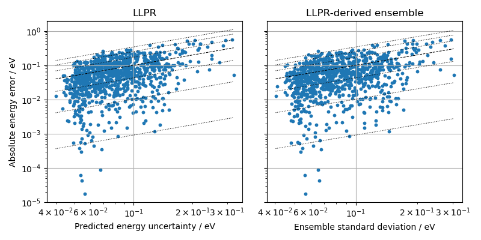

Note
Go to the end to download the full example code.
Training a Model with Uncertainties from Scratch¶
- Authors:
Filippo Bigi @frostedoyster
This recipe shows how to train a small baseline potential and equip it with uncertainty quantification (UQ) capabilities using LLPR, including a shallow last-layer ensemble.
The workflow follows the
uq4ml tutorial and uses
metatrain to train the model and
wrap it with the LLPRUncertaintyModel wrapper.
Getting Started¶
At the bottom of the page, you’ll find a ZIP file containing the whole example. It
includes the environment.yml file and the small metatrain option files needed to
execute the script.
Imports¶
import ase.build
import ase.io
import matplotlib.pyplot as plt
import numpy as np
from ase.calculators.emt import EMT
from atomistic_cookbook_utils import run_command
LLPR integration¶
LLPR can be used to turn a baseline model into a model that returns analytical uncertainties and, optionally, a shallow last-layer ensemble. We first build the same kind of small aluminum dataset used in the LLPR tutorial: randomly distorted fcc cells evaluated with the EMT potential.
calculator = EMT()
structure = ase.build.bulk("Al", "fcc", cubic=True)
structures = []
for i in range(1000):
atoms = structure.copy()
atoms.rattle(0.3, seed=i)
atoms.calc = calculator
atoms.info["energy"] = atoms.get_potential_energy()
atoms.arrays["forces"] = atoms.get_forces()
atoms.info["stress"] = atoms.get_stress(voigt=False)
atoms.calc = None
structures.append(atoms)
ase.io.write("dataset.xyz", structures[:50])
ase.io.write("evaluation.xyz", structures[50:])
The option files bundled with this recipe define a small PET model and the LLPR wrapper. The second command trains LLPR and samples a last-layer ensemble. These options are copied from the LLPR tutorial.
mtt train options.yaml -o model.pt
mtt train options-llpr.yaml -o model-llpr.pt
mtt eval model-llpr.pt eval.yaml -b 20
The example runs these commands directly. We then read output.xyz using the same
workflow as the LLPR tutorial notebook.
run_command("mtt train options.yaml -o model.pt")
run_command("mtt train options-llpr.yaml -o model-llpr.pt")
run_command("mtt eval model-llpr.pt eval.yaml -b 20")
CompletedProcess(args=['mtt', 'eval', 'model-llpr.pt', 'eval.yaml', '-b', '20'], returncode=0)
We can now inspect LLPR and ensemble uncertainties for the held-out structures. The plot compares each uncertainty estimate with the absolute energy error.
reference_structures = ase.io.read("evaluation.xyz", ":")
evaluated_structures = ase.io.read("output.xyz", ":")
predicted_energies = np.array(
[atoms.get_potential_energy() for atoms in evaluated_structures]
)
true_energies = np.array(
[atoms.get_potential_energy() for atoms in reference_structures]
)
errors = np.abs(predicted_energies - true_energies)
llpr_uncertainties = np.array(
[atoms.info["energy_uncertainty"] for atoms in evaluated_structures]
)
ensemble_uncertainties = np.array(
[atoms.info["energy_ensemble"].std() for atoms in evaluated_structures]
)
def positive_log_limits(array: np.ndarray) -> tuple[float, float]:
values = np.ravel(array)
values = values[np.isfinite(values) & (values > 0.0)]
return values.min(), values.max()
quantile_lines = [0.00916, 0.10256, 0.4309805, 1.71796, 2.5348, 3.44388]
fig, axes = plt.subplots(1, 2, figsize=(8, 4), sharey=True)
for ax, uncertainty, title, xlabel in [
(
axes[0],
llpr_uncertainties,
"LLPR",
"Predicted energy uncertainty / eV",
),
(
axes[1],
ensemble_uncertainties,
"LLPR-derived ensemble",
"Ensemble standard deviation / eV",
),
]:
lower, upper = positive_log_limits(uncertainty)
ax.plot([lower, upper], [lower, upper], "k--", lw=0.75)
for factor in quantile_lines:
ax.plot([lower, upper], [factor * lower, factor * upper], "k:", lw=0.75)
ax.scatter(uncertainty, errors, s=10)
ax.set(xscale="log", yscale="log", xlabel=xlabel, title=title)
ax.grid()
axes[0].set_ylabel("Absolute energy error / eV")
fig.tight_layout()

The exported LLPR model can also be used directly through the metatomic ASE
calculator. Requesting energy_uncertainty returns the calibrated LLPR
uncertainty, while requesting energy_ensemble returns all shallow-ensemble
energies.
for i in range(5):
print(
f"structure {i:2d}: "
f"energy = {predicted_energies[i]: .6f} eV, "
f"LLPR uncertainty = {llpr_uncertainties[i]: .6f} eV, "
f"ensemble std = {ensemble_uncertainties[i]: .6f} eV"
)
structure 0: energy = 0.966575 eV, LLPR uncertainty = 0.051016 eV, ensemble std = 0.053964 eV
structure 1: energy = 2.625247 eV, LLPR uncertainty = 0.100603 eV, ensemble std = 0.120552 eV
structure 2: energy = 1.878015 eV, LLPR uncertainty = 0.068232 eV, ensemble std = 0.080747 eV
structure 3: energy = 2.840761 eV, LLPR uncertainty = 0.114736 eV, ensemble std = 0.119898 eV
structure 4: energy = 1.734108 eV, LLPR uncertainty = 0.074208 eV, ensemble std = 0.069453 eV
The exported model can be used directly as a drop-in calculator for any inference workflow. For an end-to-end demonstration — single-point uncertainty estimates on a validation dataset, vacancy formation energies with ensemble error bars, and uncertainty propagation through an MD trajectory — see the Uncertainty Quantification with PET-MAD example.
Total running time of the script: (0 minutes 57.462 seconds)